Embodied intelligence
Learning policies for perception, decision-making, and action in the physical world.
Perception · Decision · Action
Academic profile
I’m interested in how intelligent systems learn to act in the physical world.
My interests span embodied intelligence, robot learning, and mixture-of-experts models. I explore how internal model dynamics relate to robot behavior, with a focus on reliability and learning efficiency.
Learning policies for perception, decision-making, and action in the physical world.
Perception · Decision · Action
Routing dynamics, expert interactions, and the behavior of sparsely activated models.
Routing · Structure · Behavior
Data-efficient training, failure recovery, and execution quality beyond task success.
Efficiency · Recovery · Quality

Exploring the internal routing dynamics of mixture-of-experts policies for execution monitoring, recovery, and more efficient robot learning.
National Third Prize (team) · October 2026
Fudan University's 2026 CUADC project in fixed-wing UAV reconnaissance and strike, involving software for visual perception, flight-controller communication, and simulation.
Interested in robot learning, embodied intelligence, or the inner workings of models? Let’s connect.